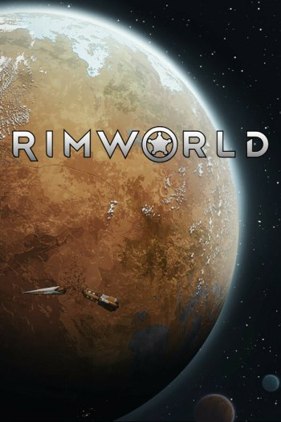
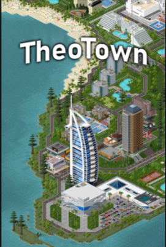
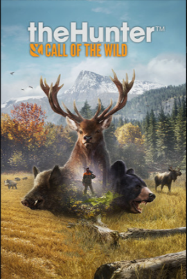
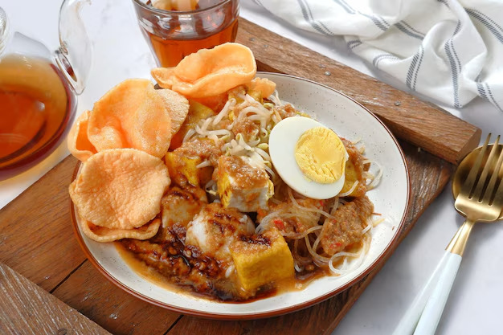
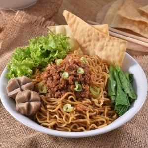

Hobi
Bermain Game
Saya sangat menyukai dunia game, terutama game strategi dan simulasi.
Beberapa game yang saya mainkan antara lain:



Mendengarkan Musik
Saya memiliki minat dalam bermain gitar dan mencoba menulis lagu. Bermain musik membantu saya mengekspresikan kreativitas dan memberikan relaksasi setelah seharian beraktivitas.
Makanan Favorit
Berikut adalah beberapa makanan favorit saya:

Ketoprak

Mie Ayam
Selain itu saya juga suka makanan pedas.